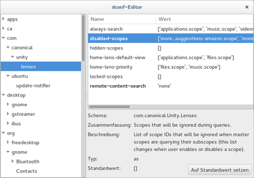

dconf
Dieser Artikel wurde für die folgenden Ubuntu-Versionen getestet:
Ubuntu 16.04 Xenial Xerus
Ubuntu 14.04 Trusty Tahr
Zum Verständnis dieses Artikels sind folgende Seiten hilfreich:
dconf  ist ein Konfigurations-System von GNOME 3, das auch von Unity eingesetzt wird und das alte gconf-System von GNOME 2 ersetzt. Dieser Artikel soll zeigen, wie mittels eines grafischen Konfigurationswerkzeugs als auch im Terminal Einstellungen abgefragt, bearbeitet und zurückgesetzt werden.
ist ein Konfigurations-System von GNOME 3, das auch von Unity eingesetzt wird und das alte gconf-System von GNOME 2 ersetzt. Dieser Artikel soll zeigen, wie mittels eines grafischen Konfigurationswerkzeugs als auch im Terminal Einstellungen abgefragt, bearbeitet und zurückgesetzt werden.
Die Einstellungen werden für jeden Benutzer getrennt im Homeverzeichnis in der Datei
~/.config/dconf/user
gespeichert. Diese Datei kann bei Problemen gelöscht werden. Sie wird beim nächsten Anmelden neu erstellt und alle Standardeinstellungen werden wieder geladen.
Installation¶
Um mit dem grafischen Konfigurationswerkzeug arbeiten zu können, muss das folgende Paket installiert[1] sein:
dconf-editor (universe)
 mit apturl
mit apturl
Paketliste zum Kopieren:
sudo apt-get install dconf-editor
sudo aptitude install dconf-editor
Verwendung¶
Grafisch¶
Der grafische Konfigurations-Editor kann über ein Terminal[2] mit dem Befehl:
dconf-editor
oder über die Kommandozeile ( Alt + F2 ) aufgerufen werden. Alternativ kann auch ein Programmstarter erstellt werden. Dabei ist zu beachten, dass man das Programm immer ohne Root-Rechte startet, da die Änderungen sonst nicht für den eigenen Benutzer gelten!
 Nach dem Aufrufen des Programms werden die verfügbaren Einstellungen in einem Baumverzeichnis sortiert anzeigt und können bearbeitet werden.
Hinweis:
Das Baumverzeichnis lässt sich nur über einen Klick auf das kleine Dreieck vor dem jeweiligen Element öffnen.
Zu jedem Schlüssel werden detaillierte Informationen zu Verfügung gestellt.
| Informationen über den jeweiligen Schlüssel | |
| Information | Erläuterung |
Schema | Angabe des Schemas, zu dem dieser Schlüssel gehört |
Zusammenfassung | Eine kurze Zusammenfassung über die Funktion dieses Schlüssels. |
Beschreibung | Es werden die Auswirkungen und Einstellungsmöglichkeiten dieses Schlüssels näher erläutert. |
Typ | Der Typ des Schlüssels wird angegeben. |
Standardwert | Hier hat man die Möglichkeit mit einem Klick auf "Auf Standardwert setzen" den Schlüssel zurückzusetzen. |
Entspricht der Wert eines Schlüssel nicht dem Standardwert, dann erkennt man dies daran, dass der Name des Schlüssels fett dargestellt wird. Mit einem Klick  auf einen Wert wird dieser beschreibbar und kann verändert werden. Die Änderung werden nach einem Klick außerhalb des Textfelds gespeichert und sind sofort wirksam.
auf einen Wert wird dieser beschreibbar und kann verändert werden. Die Änderung werden nach einem Klick außerhalb des Textfelds gespeichert und sind sofort wirksam.
Kommandozeile¶
Möchte man einen Schlüssel lieber über ein Terminal[2] verändern, dann kann das mit dem Befehl gsettings erfolgen. gsettings berücksichtigt nur die Schemata, welche in /usr/share/glib-2.0/schemas/ gespeichert sind. Alle Schemata, welche in einem anderen Verzeichnis liegen, werden nicht beachtet. Für diese Schemata muss man auf den grafischen dconf-Editor zurückgreifen, der alle Schemata berücksichtigt. Im Folgenden werden die einzelnen Möglichkeiten des Befehls gsettings kurz beleuchtet und an einem Beispiel vorgestellt.
Der Befehl gsettings setzt sich folgendermaßen zusammen:
gsettings BEFEHL [SCHEMA] [SCHLÜSSEL]
Die nachfolgende Liste zeigt alle vorhandenen Befehlen (BEFEHL):
| Befehle zu "gsettings" | |
| BEFEHL | Bedeutung |
help [BEFEHL] | Zeigt die Hilfeseite an. Gibt man zusätzlich einen Befehl an, wird zu diesem Befehl eine Hilfeseite angezeigt. |
list-schemas | Listet alle nicht verschiebbaren Schemata auf. |
list-relocatable-schemas | Listet alle verschiebbaren Schemata auf. |
list-keys SCHEMA[:PFAD] | Listet alle zum Schema gehörende Schlüssel auf. |
list-children SCHEMA[:PFAD] | Listet alle Unterelemente des Schemas auf. |
list-recursively [SCHEMA[:PFAD]] | Listet alle Schlüssel und deren Werte eines Schemas auf. Falls man kein Schema angibt, werden alle Schlüssel aus allen Schemata ausgegeben. |
range SCHEMA[:PFAD] SCHLÜSSEL | Fragt den Bereich der gültigen Werte eines Schlüssel ab. |
get SCHEMA[:PFAD] SCHLÜSSEL | Gibt den aktuellen Wert eines Schlüssels aus. |
set SCHEMA[:PFAD] SCHLÜSSEL WERT | Setzt den Wert eines Schlüssels auf WERT. |
reset SCHEMA[:PFAD] SCHLÜSSEL | Setzt einen Schlüssel auf den Standardwert zurück. |
reset-recursively SCHEMA[:PFAD] | Setzt alle Schlüssel des angegeben Schemas auf den Standardwert zurück. |
writable SCHEMA[:PFAD] SCHLÜSSEL | Prüft, ob der Schlüssel beschreibbar ist. |
monitor SCHEMA[:PFAD] [SCHLÜSSEL] | Überwacht den Schlüssel auf Veränderungen. Falls kein Schlüssel angegeben wird, wird das komplette Schema überwacht. |
Ausgaben von range¶
Mit dem Befehl:
gsettings range SCHEMA[:PFAD] SCHLÜSSEL
kann man sich den Wertebereich eines Schlüssels anzeigen lassen. Die folgende Tabelle zeigt, was die häufigsten Ausgaben zu bedeuten haben:
| Bedeutung der Ausgaben des Befehls range | ||
| Ausgabe | Bedeutung | mögliche Werte |
type b | Wahrheitswert | true oder false |
type u | Ganzzahl | positive ganze Zahlen von [0..4294967295] |
type i | Ganzzahl | ganze Zahlen zwischen [-2147483648..2147483647] |
type d | Gleitkommazahl | Zahlen zwischen [2.2250738585072014e-308..1.7976931348623157e+308] |
range u ZAHL1 ZAHL2 | Ganzzahl | Ganzzahlen zwischen ZAHL1 und ZAHL2 zugelassen; maximal zwischen [0..4294967295] |
range i ZAHL1 ZAHL2 | Ganzzahl | Ganzzahlen zwischen ZAHL1 und ZAHL2 zugelassen; maximal zwischen [-2147483648..2147483647] |
range d ZAHL1 ZAHL2 | Gleitkommazahl | Zahlen zwischen ZAHL1 und ZAHL2 zugelassen; maximal zwischen [2.2250738585072014e-308..1.7976931348623157e+308] |
type (ii) | zwei Ganzzahlen | Zwei mit einem Kommata getrennte und einer Klammer eingefasste Ganzzahlen des Typs i. |
enum | festgelegte Zeichenkette | die vorgegeben Möglichkeiten werden angezeigt |
type s | Zeichenkette | Mehrere getrennte Zeichenketten werden mit ' ' eingefasst. Eine Pfadangabe beginnt immer mit file:// → file:///home/user/ |
type as | mehrere Zeichenketten | Alle Elemente werden mit [ ] eingefasst und jede einzelne Zeichenkette wird mit einem Kommata getrennt. [] bedeutet einen leeren Eintrag. |
Beispiel¶
Nachfolgend wird am Beispiel der Anzeige der Festplatten im Startmenü die Vorgehensweise erläutert. Zuerst fragt man die vorhandenen vorhandenen Schlüssel des zu bearbeitenden Schemas ab:
gsettings list-keys com.canonical.Unity.Devices
devices-option
Ausgehend von dieser Ausgabe kann man nun die zulässigen Werte abfragen:
gsettings range com.canonical.Unity.Devices devices-option
`type as` 'Never' 'OnlyMounted' 'Always'
Am 'type as' erkennt man, dass man bei diesem Schlüssel nur einen der vorgegebenen Zeichenketten eingeben darf. Nun fragt man den eingestellten Wert ab:
gsettings get com.canonical.Unity.Devices devices-option
'OnlyMounted'
Will man diesen ändern, so setzt man jetzt einen zulässigen Wert aus obiger Ausgabe ein. Dabei ist darauf zu achten, dass der Wert beim Schreiben, wie in der Ausgabe vorgegeben, (soweit zutreffend) in " eingefasst wird und Trennkommas, Hochkommas, Leerzeichen sowie eckige Klammern übernommen werden!
gsettings set com.canonical.Unity.Devices devices-option 'Never'
Zum Schluss kontrolliert man die erfolgreiche Umstellung mit:
gsettings get com.canonical.Unity.Devices devices-option
'Never'
Links¶
Intern¶
GNOME Konfiguration
 Übersichtsartikel
ÜbersichtsartikelUnity/Unity Einstellungen - Versteckte Einstellungen in Unity
Extern¶
gsettings
- Manpagedconf
- ManpageWhat is dconf, what is its function, and how do I use it?
- Einführung in das Thema dconf auf askubuntu.com
- Erstellt mit Inyoka
-
 2004 – 2017 ubuntuusers.de • Einige Rechte vorbehalten
2004 – 2017 ubuntuusers.de • Einige Rechte vorbehalten
Lizenz • Kontakt • Datenschutz • Impressum • Serverstatus -
Serverhousing gespendet von